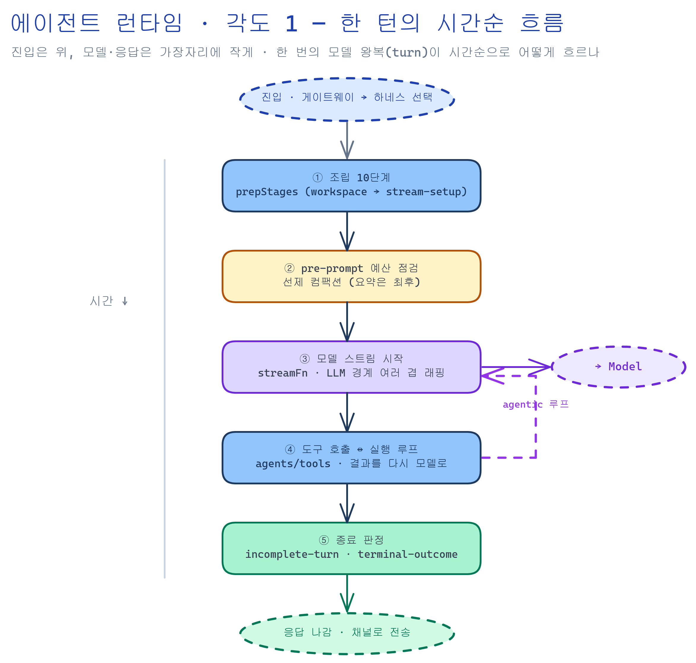
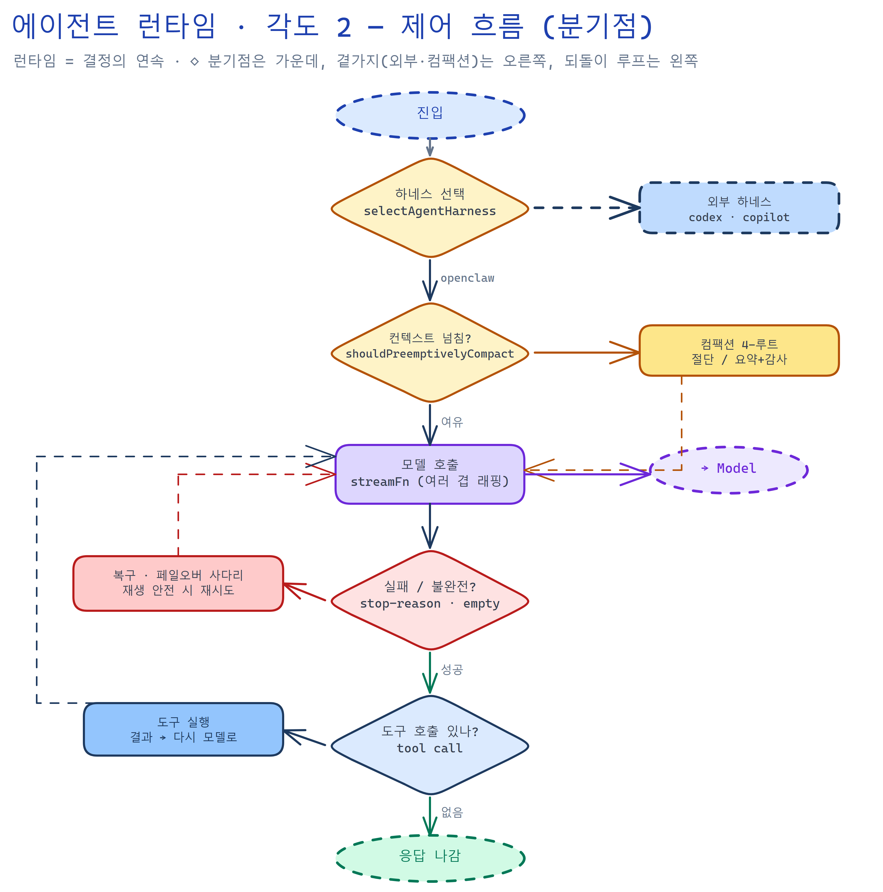
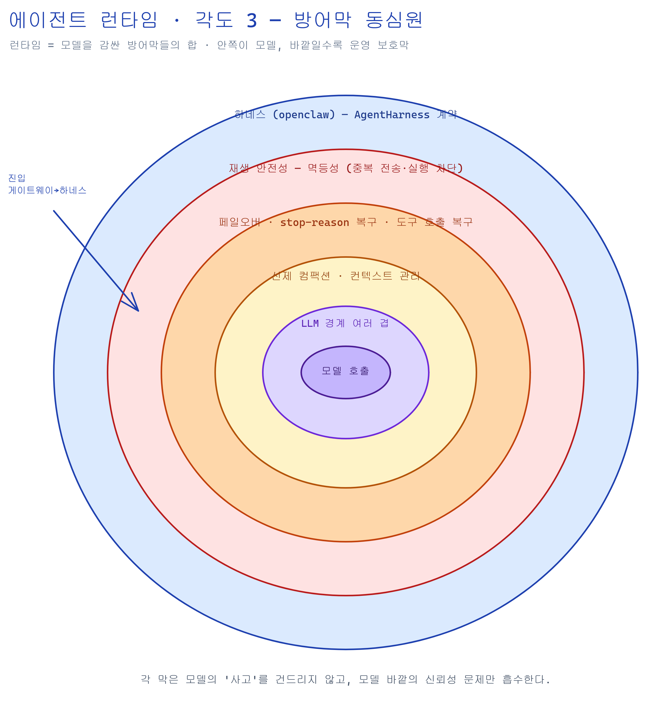
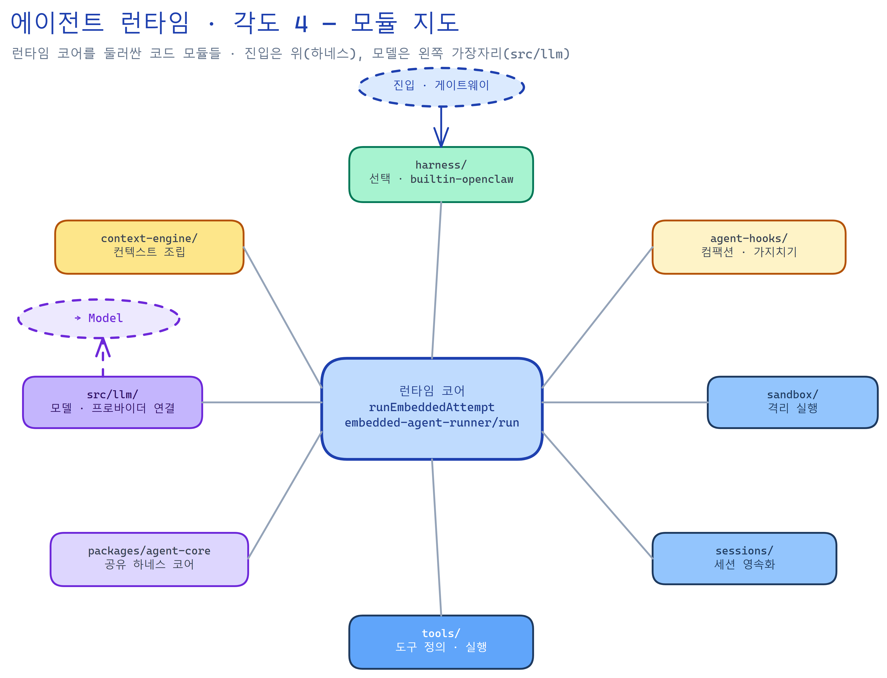
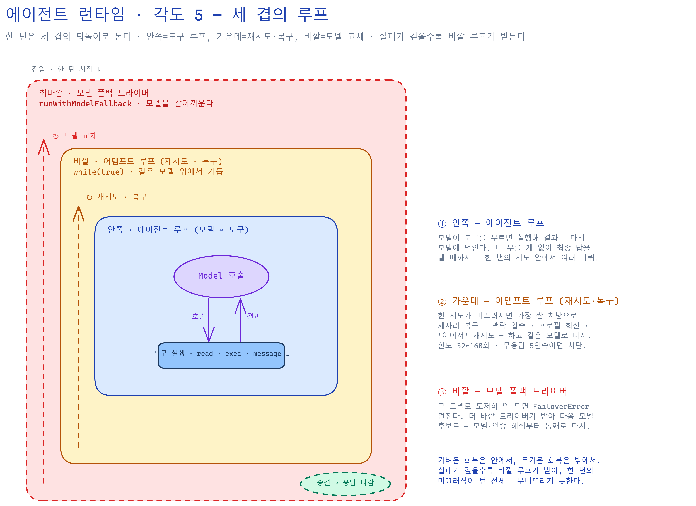
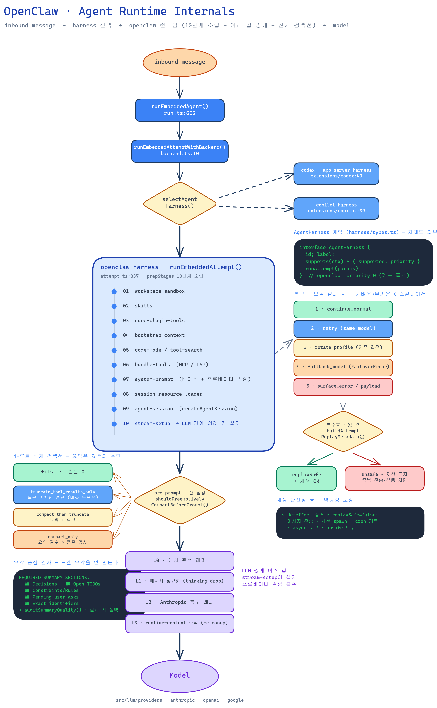

각도 1패턴 · 타임라인
한 턴의 시간순 흐름
한 번의 모델 왕복(turn)이 흐르는 순서. 조립 10단계 → pre-prompt 예산 → 모델 스트림 → 도구 실행 루프 → 종료 판정. 위가 진입, 오른쪽·아래가 모델·응답.

⤢ 크게
에이전트 런타임 내부를 서로 다른 렌즈로 비춘 여섯 점의 다이어그램이다. 들어오는 곳·나가는 곳은
각 그림 가장자리에 작게만 두고, 가운데는 런타임의 작동 방식에 집중한다.
이미지를 클릭하면 크게 볼 수 있고, 각 카드에서 편집용 .excalidraw 원본도 열 수 있다.

⤢ 크게
⤢ 크게
⤢ 크게embedded-agent-runner/run)를 둘러싼 코드 모듈들 — harness · agent-hooks · sandbox · sessions · tools · agent-core · src/llm · context-engine.
⤢ 크게FailoverError→다음 모델). 가벼운 회복은 안에서, 무거운 회복은 밖에서.
⤢ 크게file:line 증거 포함.
⤢ 크게